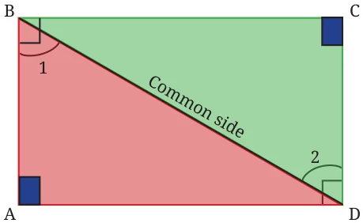
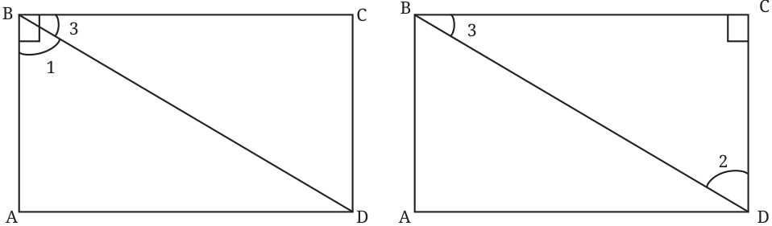
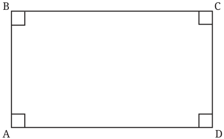

As we have been seeing from lower grades, properties of geometric objects such as parallel lines, angles, and triangles can be deduced through geometric reasoning. We will continue to deduce properties of special types of quadrilaterals in this chapter. Once you have deduced a property of a quadrilateral, it is good to verify it with a real-world quadrilateral, either the quadrilateral constructed on paper or simply a surface having the shape of the quadrilateral. If you are not able to figure out the property using deduction, you could experiment by taking real-world quadrilaterals and observing the property through measurement. Note that these observations give useful insights about the property, but with them, we can only form a conjecture, that is, a statement about which we are highly confident, but not yet sure if it always holds true. For example, constructing a few rectangles and observing through measurement that their diagonals bisect each other does not necessarily mean that this will always be the case - can we be sure that the 1000th rectangle we construct will also have this property? The only way we can be sure of this property is by justifying or proving the statement, just as we did in Deduction 2.
Note to the Teacher: Gently encourage students to deduce or justify properties. Whenever students face challenges in doing it, encourage them to experiment and observe, and use their intuition to figure out the properties.

The Carpenter’s Problem shows that rectangles can also be defined as follows - Rectangle: A rectangle is a quadrilateral whose diagonals are equal and bisect each other. Observe how different this definition is from the earlier one. Yet, both capture the same class of quadrilaterals. Further, it turns out that the first definition can be simplified.
In the earlier definition, we stated that a rectangle has (a) opposite sides of equal length, and (b) all angles equal to \(90 ^{\circ}\) . Would we be wrong if we just define a rectangle as a quadrilateral in which all the angles are \(90 ^{\circ}\) ? If you think that this definition is incomplete, try constructing a quadrilateral in which the angles are all \(90 ^{\circ}\) but the opposite sides are not equal. Are you able to construct such a quadrilateral? Let us prove why this is impossible.
Deduction \(4 -\) What is the shape of a quadrilateral with all the angles equal to \(90 ^{\circ}\) ?
Consider a quadrilateral ABCD with all angles measuring \(90 ^{\circ}\) . What can we say about the opposite sides of such a quadrilateral? Join BD. \(\triangle BAD\) and \(\triangle DCB\) seem congruent. Can we justify this claim?

Recall that we tackled a very similar problem in Deduction 2. We can use the same reasoning here.

Since \(\angle B = 90 ^{\circ}\) , In \(\triangle BCD\), since

So, \(\angle 1 = \angle 2\).
Thus, by the AAS congruence condition, \(\triangle BAD \cong \triangle DCB\). Therefore, \(AD = CB\), and \(DC = BA\), since these are corresponding sides of congruent triangles. Is it wrong to write \(\triangle BAD \cong \triangle CDB\)? Why? Thus, we have established that if all the angles of a quadrilateral are right angles, then the opposite sides have equal lengths. Therefore, the quadrilateral is a rectangle. Thus, a rectangle can simply be defined as follows - Rectangle: A rectangle is a quadrilateral in which the angles are all \(90 ^{\circ}\) . Let us list the properties of a rectangle. Property 1: All the angles of a rectangle are \(90 ^{\circ}\) . Property 2: The opposite sides of a rectangle are equal. Are the opposite sides of a rectangle parallel? They definitely seem so. This fact can be justified using one of the transversal properties. Notice that AB acts as a transversal to AD and BC, and that \(\angle A + \angle B = 90 ^{\circ} + 90 ^{\circ} = 180 ^{\circ}\) . When the sum of the internal angles on the same side of the transversal is \(180 ^{\circ}\) , the lines are parallel. We can use this fact to conclude that the lines AD and BC are parallel, which we represent as AD || BC. Can you similarly show that AB is parallel to DC (AB||DC)? Property 3: The opposite sides of a rectangle are parallel to each other. Property 4: The diagonals of a rectangle are of equal length and they bisect each other.
